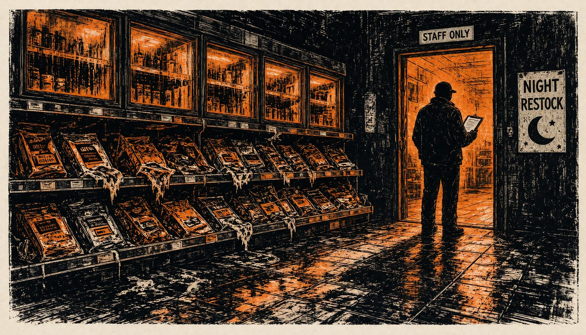

French cyber agency blames Iran's Revolutionary Guard for shop fridge attack
The cyberattack forced refrigeration at about 700 retail sites into high temperatures and destroyed the stock. The agency will ask European partners for new sanctions on Iranian entities.

France's cyber crisis centre blames the Shahid Kaveh unit of Iran's Revolutionary Guard for the 11-12 October cyberattack on refrigeration at about 700 retail sites. It will ask its European partners for new sanctions on Iranian entities and people. Araghchi wrote on X that France shifts the blame for its failures onto others, unable to manage refrigerators or its people's grievances.
The attackers targeted Danfoss (AK-SC/AK-SM series), Dixell xweb, and Copeland xweb refrigeration controllers, forcing them into maximum-temperature defrost cycles of up to +50°C overnight, and the shops hit lost their stock completely. Belgium's cyber security centre says the affected systems were reachable over the public internet. It advises firms to remove that public access to refrigeration and other critical systems. Access should go through a secure VPN or a protected internal network instead, the centre said.
The blood agency Établissement français du sang was not hit directly. On November 2, an attack raised the temperature and defrost settings in cold-storage chambers at three of its facilities in France, BleepingComputer reported. In a statement on November 3, it said its refrigeration supplier was the target. It said the incident affected some of its technical equipment. The agency is continuing investigations with the competent authorities, and a judicial investigation is now under way.
The agency said the anomalies altered the operating parameters of cold rooms equipped with the supplier's system. Its monitoring and alarm systems spotted the temperature change quickly. Staff fixed the equipment or moved products in time. Blood collection and distribution continued without interruption. The case now sits with the anti-cybercrime office Ofac and the domestic intelligence service DGSI. The charge is attack on an automated data processing system.
The agency, for its part, said no health impact was identified and no loss of blood products was to be reported.